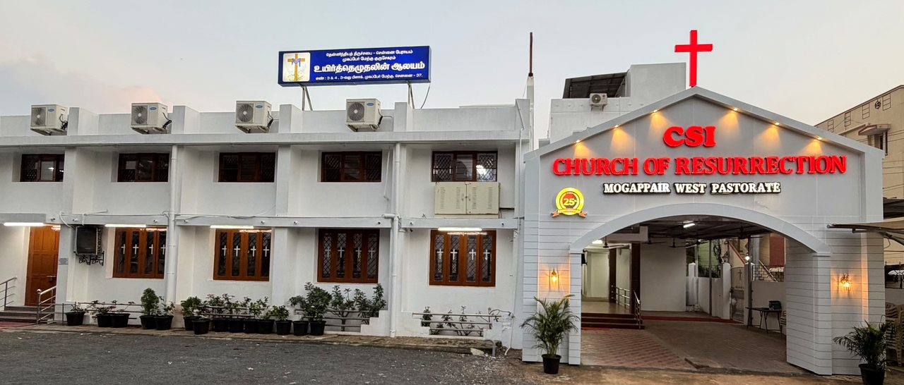
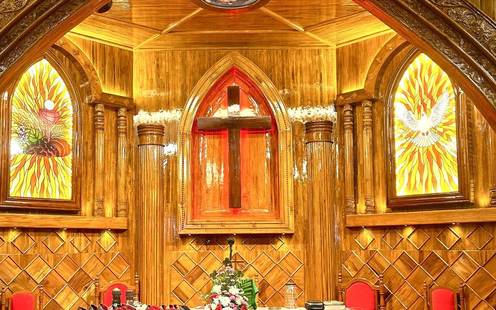
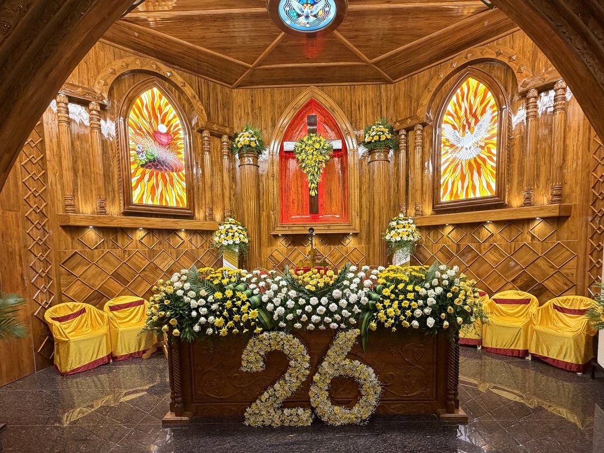
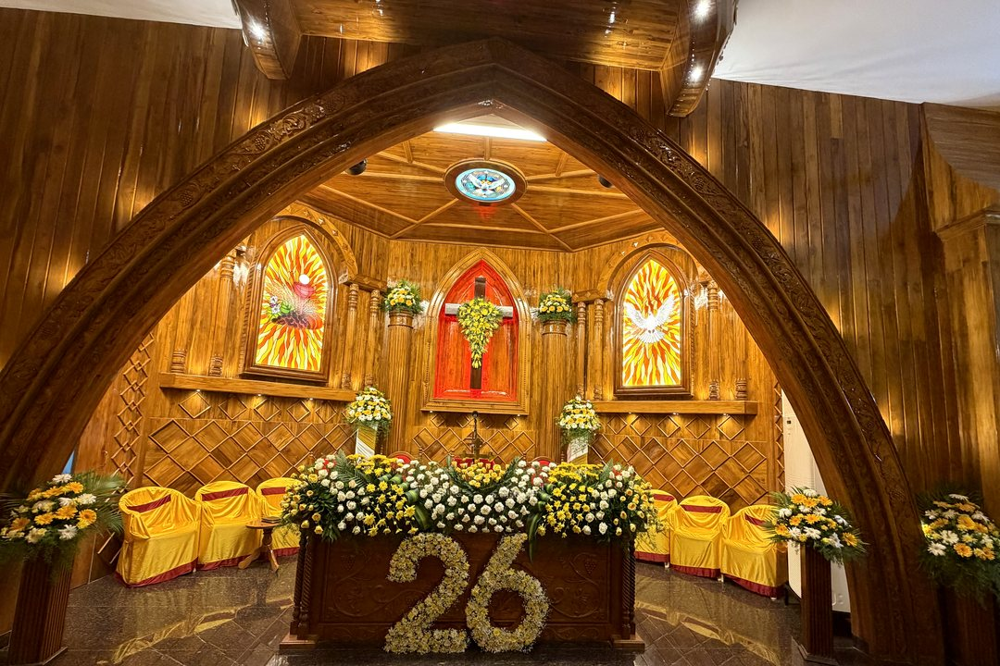

“That they all may be one” — John 17:21 (CSI Motto)
“I will pour out my spirit on all flesh; your sons and your daughters shall prophesy.” — Joel 2:28
A loving, Christ-centered parish in Mogappair West, Chennai. Celebrating over 25 years of God’s faithfulness, we warmly invite you and your family to worship the risen Lord in the beauty of holiness, grow in the Word, and share in vibrant Christian fellowship.
Explore our Sunday Divine Worship services, age-group fellowships, weekday intercessory prayers, and choir rehearsals.
Early morning liturgy, traditional hymns, responsive psalm readings, and gospel meditation to begin the Lord’s Day in quiet reverence.
Main pastoral divine worship service featuring church choir anthems, congregational praise, sermon, and Holy Communion celebrated on the 1st and 3rd Sundays of every month.
Evening praise, family testimonies, prayer of intercession, and biblical preaching to conclude the Sabbath Day with thanksgiving.
Scripture lessons, action choruses, memory verses, and Christian moral foundations for children from beginner through senior classes.
Spiritual mentorship and age-specific discussions helping teenagers navigate adolescent life with strong biblical convictions.
Inspiring college youth and young professionals through interactive Bible study, contemporary praise, leadership training, and outreach.
Bringing fathers and men of the parish together for prayer, biblical reflection on family leadership, and active church service.
Nurturing newly married couples and young families in God’s design for marriage, Christian parenting, and Christ-centered homes.
Neighborhood home fellowship gatherings hosted in parish families’ residences across Mogappair West for hymns, Scripture, and household blessing.
Dedicated Friday intercessory prayer seeking divine healing, deliverance, family blessings, and praying over submitted prayer requests.
Weekly gathering of mothers and women of our church for Bible meditation, chain prayer, hospital/home visits, and charitable outreach.
Vocal training, hymn singing, and choir discipline for young voices leading praise during Sunday services and special festivals.
Four-part harmony vocal rehearsal, sacred anthem preparation, and CSI liturgical setting practice for Sunday Divine Worship.
Special fellowship gatherings alongside pastoral home visitation and home Holy Communion honoring the senior members of our parish.
No gatherings match your current search filter.
Try clearing the search box or switching to “All Gatherings”.
The CSI Church of Resurrection is a vibrant parish within the Diocese of Madras, belonging to the historic Church of South India (CSI). Situated at Vellalar Street, Mogappair West, Chennai, our church stands as a place of spiritual refuge, reverent liturgical worship, and Christ-like hospitality.
Embodying the ecumenical vision “That they all may be one” (John 17:21), families and believers gather here to celebrate the resurrection power of Jesus Christ through the preached Word, the Holy Sacraments, and compassionate Christian service.
Under the pastoral leadership of Rev. Ph. D. Henry Jeba Richard, alongside our dedicated Pastorate Committee, we are committed to nurturing children and youth, strengthening families, caring for our elders, and sharing the Gospel of peace.
Firm grounding in the Holy Scriptures and historic apostolic faith.
Holy Baptism, Confirmation, and Holy Communion on 1st & 3rd Sundays.
Area cottage prayers, hospital visits, and dedicated home intercession.
Vibrant wings for children, teens, youth, couples, men, women, and elders.
Presbyter-in-Charge • Mogappair West Pastorate
“Grace, peace, and blessings to you in the precious name of our Risen Lord and Saviour Jesus Christ! Whether you are a longstanding member of our parish or visiting for the first time, you have a home here. May the Holy Spirit strengthen your household and walk with you always.”
No: 3/3 & 4, Vellalar Street, Chennai – 600 037



“பரிசுத்த அலங்காரத்துடனே கர்த்தரைத் தொழுது கொள்ளுங்கள்”
Inscribed in Tamil upon our carved wooden Communion Altar — Psalm 29:2 / Psalm 96:9
Our sanctuary features a handcrafted teakwood chancel arch framing the central illuminated Cross. Flanking the altar are twin stained-glass windows depicting the Holy Eucharist (Bread, Chalice, Wheat & Grapes) on the left and the Descending Dove of the Holy Spirit on the right, crowned by the ceiling medallion of the Holy Spirit.
From our youngest Sunday School children to our revered elders, every member has a vital place to belong, grow, and serve.
Sundays after 8:30 AM Service
Equipping children with strong biblical foundations, scripture memory verses, joyful singing, Christian values, and annual VBS celebrations.
Sundays after 8:30 AM Service
Guiding teenagers through their formative school years with relevant Bible study, Christ-centered friendships, and personal mentorship.
Sundays after 8:30 AM Service
Empowering college students and young professionals through worship, Bible study, youth retreats, evangelism, and parish service.
Sundays after 8:30 AM Service
Strengthening men as spiritual leaders in their homes and church through prayer, Christian brotherhood, and outreach support.
Every Saturday at 5:30 PM
A devoted fellowship of prayerful mothers and women engaged in Word meditation, chain prayers, visiting the sick, and charity.
Alternate Sundays (Post 8:30 AM)
Encouraging newly wedded couples and young parents to build Christ-honoring marriages, prayerful homes, and lasting fellowship.
Junior: Sat 5:45 PM • Senior: Sat 6:45 PM
Carrying forward the rich choral heritage of the CSI liturgy through sacred anthems, four-part harmony, and festival music services.
Every Friday at 10:00 AM
Standing in the gap through fasting and fervent intercession for parish families, healing of the sick, and spiritual revival.
Periodic Gatherings & Home Visits
Honoring our senior citizens through periodic fellowship meetings, pastoral visitation, and home Holy Communion for the elderly.
Faithfully served by our Presbyter-in-Charge and the honorary office bearers of the Mogappair West Pastorate Committee.
Pastor & Chairman
CSI Church of Resurrection Pastorate
Secretary
Pastorate Committee
Treasurer
Pastorate Committee
Served in unity with the Pastorate Committee & The Congregation • CSI Church of Resurrection, Mogappair West
Join our online congregation from anywhere in the world. We livestream our Sunday worship services and special festival services on YouTube.
Explore our church exterior, illuminated welcome arch, carved wooden sanctuary, stained-glass artistry, and 26th Anniversary celebrations. Click any photograph to view full screen.
Main church building and entrance archway at Vellalar Street, Mogappair West.
Sanctuary altar prepared for Holy Communion beneath the carved wooden arch.
Front entrance gable crowned with the red cross and warm architectural lighting.
Close-up of the Eucharistic Bread & Chalice, Central Cross, and Holy Spirit Dove windows.
Sanctuary chancel adorned with festive floral arrangements celebrating 26 years of grace.
Full perspective through the carved wooden sanctuary arch during anniversary worship.
We warmly welcome you to worship with us. Reach out to our Pastorate Office for membership, certificates, baptism, marriage banns, or pastoral visits.
CSI Church of Resurrection
No: 3/3 & 4, Vellalar Street,
3rd Block, Mogappair West, Chennai,
Tamil Nadu – 600 037, India.
Landline Phone:
044 2652 4024
Mogappair West Pastorate, Diocese of Madras
Inquiries regarding membership, baptism/confirmation certificates, marriage banns, or pastoral appointments.